什么是昆特牌？
昆特牌
（又称 Gwynt）
曾是 CD Projekt 开发的电子游戏
《巫师 3》
中的一个迷你游戏。
它被设计成一款收集式卡牌游戏，你可以用卡牌与电脑对战。
你会从一副基础初始卡组开始，可以在推进剧情和任务的过程中，通过四处购买卡牌或在游戏中击败角色来不断强化它。
它从来就不是一款为平衡而设计的游戏。NPC 不会抱怨，所以思路就是构筑一副全是强牌的卡组，尽量每次都赢。
因此，把昆特牌改编成多人游戏并不容易。此外，游戏也可能变得无聊，因为存在明显的最优卡组和最优打法。
玩家往往会一遍又一遍地做同样的事。
幸运的是，这并不妨碍它是一款非常有趣、潜力巨大的游戏——这也是我们想进一步发扬它的原因，尤其是《巫师》这样庞大的世界观。
那它怎么玩？
昆特牌由 2 名玩家对战。他们以相同数量的手牌开始，轮流打出手牌，直到双方都跳过或都没牌可打。
每轮结束时，将每位玩家卡牌的战力相加计算出总分。总分更高的玩家赢下该轮。
率先赢下两轮的玩家获胜。
昆特牌有时会被拿来和扑克比较，因为虚张声势在其中很重要。
通常你希望用尽量少的牌赢下一轮，但由于每位玩家都可能输掉一轮，你可能想让对手相信你正试图赢下这一轮，从而逼他/她打出更多好牌，而你自己则保留实力。
卡牌在游戏中是有限资源，所以想赢就得更好地利用它们。
棋盘布局
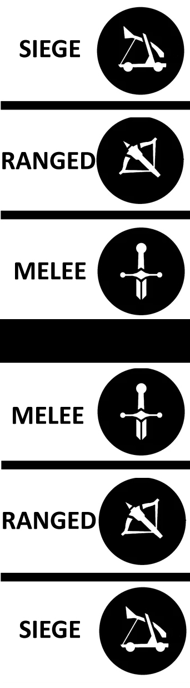
在昆特牌中，棋盘是一片战场，分为两部分——每位玩家各一边。
每一边都由三个不同的排组成：
- 近战（也叫近身战斗）
- 远程
- 攻城
大部分卡牌只能打到其中一个排。一些特殊牌则只能影响某一个排。
把卡牌集中在一排，或者相反地，分散到己方战场上，都是重要的战略决策。
棋盘划分为三排，以及可以作用于这些排的效果，是昆特牌独特与优雅的重要因素。
对许多玩家来说，这恰恰是后来的官方独立昆特牌游戏所缺失的关键部分。
那么，这些卡牌是什么？
在昆特牌中，有三大类卡牌：
- 领袖牌
- 单位牌
- 特殊牌
领袖牌
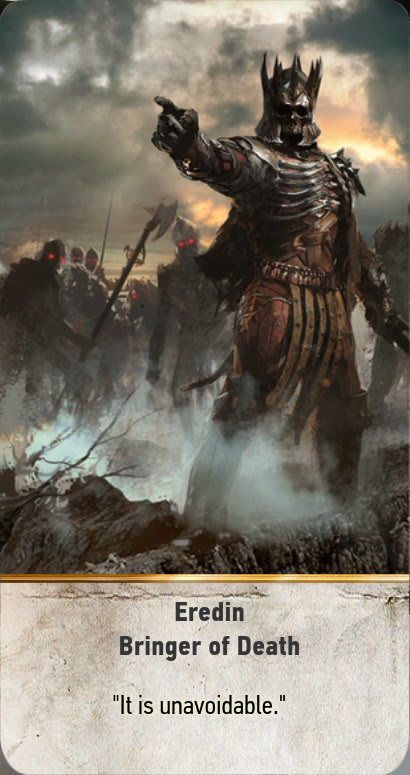
每位玩家有且只有一张领袖牌，在游戏开始前选定。它不属于卡组的一部分。
这张牌不会被打到战场上，它会正面朝上放在一旁直到游戏结束。
它没有战力值，但拥有一个强大的技能，可以影响战场和卡牌。
单位牌
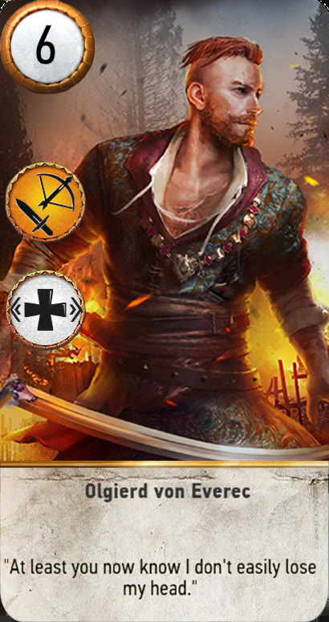
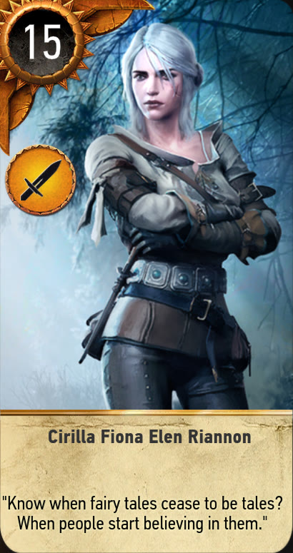
这是卡牌的主要类别，它们拥有战力值，可以增加玩家在该轮中的总分。
一些单位拥有技能（有些甚至有两个），可以对战场产生影响，或与其他卡牌配合，从而进一步提高（或降低）玩家的分数。
这些技能可以增强你某些单位的战力、召唤更多卡牌，或移除场上的一些卡牌。
单位技能大概是游戏中最重要的一部分，因为它带来了多样性与不可预测性，迫使玩家去解读对手的策略和风格，并做出恰当的反应。
一小部分单位是
英雄
单位，它们的外观与其他卡牌略有不同。英雄单位不受任何技能影响，无论敌我。
这意味着这些卡牌无法在轮次结束前被移除，它们的战力也无法被改变。此规则的例外极其罕见。
单位牌通常只能打到三排中的一排，这会在卡面上标明。有些可以打到两排中的任意一排。
特殊牌
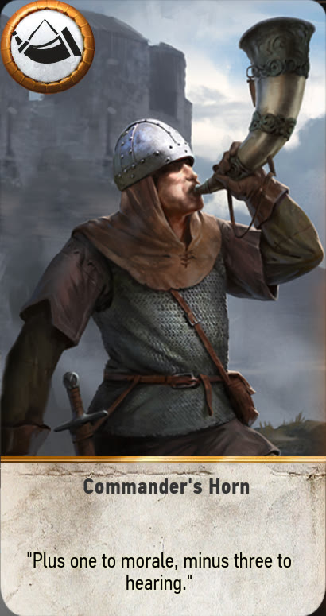
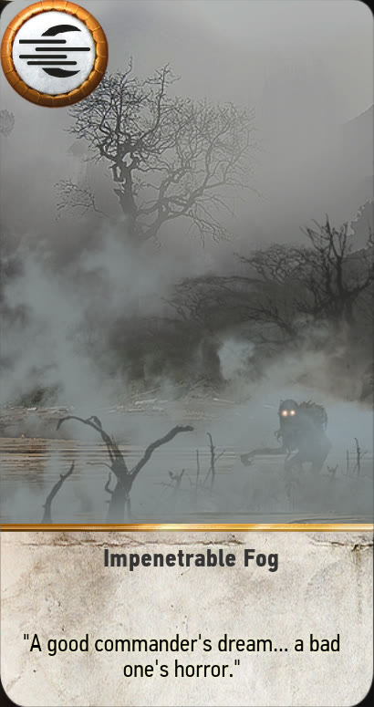
特殊牌没有战力，但拥有一个强大的技能，可以对战场产生显著影响。它们通常影响某一个特定的排，或整个战场。
一些特殊牌有即时效果，使用后立即被弃置。
另一些则在某一排上留下持续效果，直到本轮结束，或被其他技能移除。这类卡牌不会被打到战场上，而是放在己方的一个专属槽位中。
其中一类特殊牌值得特别提及，那就是
天气牌。
这些卡牌会对某一特定的排施加负面效果，但对双方玩家同时生效（所有单位牌战力降至 1）。
它们是强大的工具，可以改变整场游戏的走向。幸运的是，有一张特殊牌可以取消这些天气效果——前提是你手上恰好有它。
这些卡牌在昆特牌的策略性和优雅性中扮演着重要角色。它们简单却致命，预判对手是否可能打出它们非常关键。
如何读懂卡牌
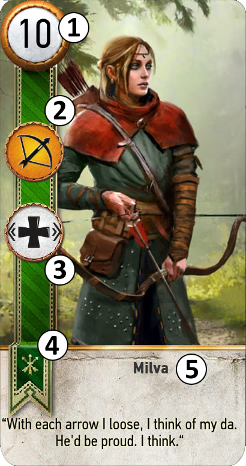
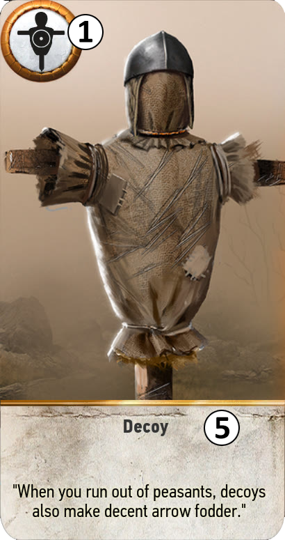
- 1： 卡牌的战力，用于计算玩家总分。卡面上最初显示的值称为「基础战力」，因为单位牌的战力可能被其他卡牌提高或降低。 特殊牌 则在此处显示技能，而非战力。
- 2： 卡牌的排。这个图标标明卡牌可以打到哪一排。剑代表近战排，弓代表远程排，投石机代表攻城排。有些情况下，图标会包含两个元素，表示卡牌可以任意选择其中一排打出。
- 3： 卡牌的技能（如果拥有的话）。有些卡牌拥有两个技能，第二个会类似地显示在此位置下方。技能的解释详见其他章节。
- 4： 图标和彩带表示卡牌所属的阵营。阵营将在后面说明。如果没有此类图标/彩带，说明这张卡是中立卡，适用于所有阵营。
- 5： 卡牌名称。大多数卡牌在名称下方还有一句引文，与角色/单位/效果相关。
技能
这款卡牌游戏很大程度上围绕着一套技能展开，它们让你可以制定策略，并适应/应对对手的策略。
昆特牌的美妙之处在于技能数量不多，容易掌握。
与官方现代昆特牌（每张卡都有独特效果）不同，原版昆特牌中多张卡牌共用同一个技能。
因此，理解一张卡牌的作用（通常看一眼卡面就够）以及一副卡组能做什么，要容易得多。
可用技能
原版游戏
这个技能相当简单，它摧毁（从战场上移除并送入弃牌堆）所有战力最高的单位牌（不含英雄）。
它影响整个战场，对双方玩家同时生效，也就是说你可能会摧毁自己的卡牌。
当对手场上有多个战力相同的单位（且场上没有更高战力的其他单位），或某个单位占其总分很大比例时，使用它效果最佳。
注意：当从一张卡牌使用此技能时，这张卡本身被排除在效果之外——它不会被自己摧毁，也不参与「最强单位」的判定。
这个技能是焦炎的变体。它不像焦炎那样影响整个战场的双方，而只影响对手的某一排。
如果该排的总战力大于等于 10（含英雄），它将摧毁该排最强的单位（但不摧毁英雄）。
最初，这个效果的目标排是卡牌所在排的对面排。
但我们改为始终以近战排为目标，以让这个技能更有用、更可预测，因为大多数阵营的近战单位比其他排多得多。
而且我们认为，让这个技能只影响敌人的第一道防线，也更「真实」。
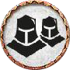
当一张带集结技能的卡牌打到战场上时，它会同时从你的牌组和手牌中召唤所有同名卡牌。
实际上，它们并不一定同名，但它们共享一个容易辨认的共同元素。
这个技能的强大之处在于，它能快速地将多张卡牌加入战场，从而提高你的总分。
它的弱点在于，这些卡牌往往战力相同，如果不小心使用，可能会被同时摧毁。
另外要记住，如果你手上有同一个系列的几张集结牌，打出其中一张会把手上所有副本一起打出，这反而会置你于不利。
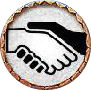
在某种意义上，紧密羁绊的行为与集结类似。这些卡牌属于同一个「系列」，在一起时更强。
对于每一张同系列（同名或类似名）且带紧密羁绊的卡牌，其基础战力会乘以同一排中该系列副本的数量。
所以如果你成功打出了 3 张副本，每张卡牌的数值会翻三倍。合起来，总分将是原来的 9 倍。
这个技能的强大之处在于，你可以在一排上获得非常高的战力，高到对手很难匹配（3 张牌能打出 9 张牌的战力）。
然而，这份强大也是它最大的弱点。由于这些卡是副本，它们战力相同，往往成为场上最强的卡牌，容易被焦炎锁定。
另外，单独一张这样的卡并不强，最重要的是设法集合多张副本。
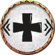
现在来说说排加成。士气鼓舞将同一排中所有单位的基础战力提高 1，但不包括自己。显然，如果你在同一排集中了许多单位，效果会更好。
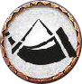
这是更强的加成。指挥官之角将该排中所有单位（不含英雄）的战力翻倍。它最后结算，所以能与其他加成很好地叠加。
同样地，它在卡牌多的排中效果更好，但卡牌数量的重要性不如士气鼓舞。几张紧密羁绊牌的加成潜力可能比 5 张弱牌更大。
虽然这个技能潜力巨大，但也让你极易受到焦炎的打击。
当此技能通过单位牌打出时，该单位不会给自己加成。
此外，同一排中只有一张指挥官之角会生效。如果该排有多张卡带此技能，它只会生效一次。
当一张卡牌从战场上被移除（被摧毁或轮次结束）时，它会进入弃牌堆。
医疗兵技能允许从弃牌堆中复活一张单位牌（非英雄）。
当一张卡牌被复活到战场上时，其技能会再次生效。
这个技能非常强大，因为它实际上在长期内为你提供了一张额外卡牌。它还允许你再次使用一些重要技能，这可能具有决定性意义。
这张卡就像美酒，越陈越香。你越晚打出它，可选的卡牌就越多。如果你的弃牌堆是空的，这个技能就不太有用。
医疗兵甚至可以复活另一个医疗兵，从而再复活另一张卡。
大概是游戏中最臭名昭著的技能。我们之前说过，卡牌是游戏最重要的资源，而这个技能的目的就是给你带来卡差优势（也就是比对手多拿牌）。
当这张卡被打出时，它会进入对手一方，为对手的总分做贡献。
作为回报，你从牌组中抽两张牌。结果是：你给了对手一张牌，但你手上比之前多了一张，而且多了 2 个可供后续出牌的选择。
除了提供卡差优势之外，多抽到牌也给你更多选择和更大的机会凑出好组合。
但要小心，一旦到了对手那边，间谍就处于他/她的控制之下，可能被反过来对付你。
这个技能常被简称为「间谍的克星」。它允许将场上一个单位与这张卡交换（换句话说，把目标卡收回手中）。
诱饵技能有很多好处。显然，它是间谍的绝佳应对手段，因为你可以通过重新打出间谍来恢复平衡并抽牌。
但它也可以用于其他带重要技能的单位，比如焦炎或医疗兵。
另外要记住，实际上打出一张诱饵几乎就像跳过一回合，因为你的手牌数量没有减少——这一点常被低估。
这个技能很少使用，因此卡牌被打出后也很少有明显效果。
基本上，它和那些可以打到近战排或远程排的卡牌一起出现（这是最有用的部分）。
在一些特定情境下，灵活卡牌可以在本轮后续被移动到更有利的排。
有点像医疗兵，召唤复仇者技能需要更长时间才能展现效果。
当带此技能的卡牌从战场上被移除（被摧毁或轮次结束）时，它会被另一张更强大的卡替代。
通常情况下，这张新卡会在下一轮开始时进入战场。
通常，一个带召唤复仇者的单位会非常弱。打出它就像是对未来的投资，因为它能让你以优势开始下一轮（前提是这张卡在本轮结束前没有被摧毁）。
这个技能与医疗兵配合得非常好。
注意：如果要召唤的卡在你手上或牌组中，会从那里取用。否则，它将「被创造」，被移除时也不会进入你的弃牌堆。
这两个技能需要放在一起介绍。它们是史凯利格阵营特有的。
带狂战士技能的单位牌，在曼陀罗技能卡牌打到它们所在的排时，会变身成更野蛮的形态。
狂战士单位初始并不强，所以不与曼陀罗配合的话并不有趣。
然而，它们的变身形态非常强，但也非常容易受到焦炎的打击。
善用这个技能并不容易。
原版游戏 - 天气牌
如前所述，天气牌是一种更特殊的特殊牌（也是技能中更特殊的一种）。
它们的效果更全局化，会同时影响双方玩家。少数情况下，单位牌也可能带有天气技能，但那是例外。
将近战排中所有单位（不含英雄）的基础战力降至 1，对双方玩家同时生效。这会在其他任何技能/效果之前结算。
将远程排中所有单位（不含英雄）的基础战力降至 1，对双方玩家同时生效。这会在其他任何技能/效果之前结算。
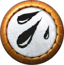
将攻城排中所有单位（不含英雄）的基础战力降至 1，对双方玩家同时生效。这会在其他任何技能/效果之前结算。
将远程排和攻城排中所有单位（不含英雄）的基础战力降至 1，对双方玩家同时生效。这会在其他任何技能/效果之前结算。
移除棋盘上当前生效的所有其他天气效果，对所有玩家生效。
新的自定义技能
为了用更多卡牌和阵营扩展游戏，我们加入了额外的技能。否则大多数卡组看起来和玩起来都会差不多。
这可能会让游戏稍微复杂一些，因为有更多的概念需要消化，但这些技能的设计都保持了原版游戏的精神，并且尽量简单。
顾名思义，辛特拉大屠杀技能适用于一些辛特拉单位。某些单位带有此技能，它们被标记为「待宰羔羊」。
当对应的特殊牌被打出时，你场上所有带有该标记（拥有该技能）的卡牌都会被摧毁并进入弃牌堆。
作为回报，你每移除一张这样的卡，就从牌组中抽一张牌。这给了你潜在的卡差优势。
诀窍在于：你不必非得使用这张特殊牌。被标记的单位可以留在场上，你可以保留它们的战力来增加总分。
所以对手并不知道你是打算为了卡差而放弃这一轮，还是会保留这些单位。
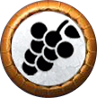
陶森特葡萄酒技能就像是指挥官之角和士气鼓舞的混合体。这张技能卡会打在某一排上并留在那里，为该排所有单位牌（不含英雄）增加 2（而不是像士气鼓舞那样只加 1）。
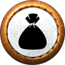
银行技能相当简单。你打出它，然后从牌组中抽一张牌。没有任何复杂之处。
它有点像跳过一回合（你的手牌数量保持不变），只不过你没法预知最终会拿到什么牌。
这个技能实际上由多张特殊牌共享。这张卡会打到对手的某一排。
如果他/她在该排打出一张单位牌（非英雄）且该单位拥有技能，那么这张单位牌会被锁定，而这张特殊牌进入弃牌堆。
被锁定的卡牌在被移出战场之前，无法使用其技能。
这个技能要求你很好地理解对手的卡组，并预判他可能拥有的卡牌。
它在阻止集结和紧密羁绊按预期发挥作用方面非常强大。
但要注意，当有锁定待生效时，别把你的间谍打到那一排。
这个技能非常直白。它打在敌人的近战排或远程排上。所有单位牌（非英雄）被向后移动 1 排，朝攻城排方向移动。
这个技能的主要目的是破坏某些有效的排加成（比如指挥官之角），或者把单位推入恶劣天气中。
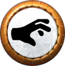
使用这个技能时，你将控制敌人近战排中战力最低的单位。如果有多个，则全部夺取。
这个技能对集结单位非常有效，或当敌人近战排处于恶劣天气下时。但要注意时机非常关键。
这一轮的好目标，下一轮可能就不存在了，因为对手会打出更弱的卡。
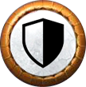
这个技能保护整排免受对手的所有技能影响（天气除外），直到本轮结束。
主要目的是保护该排免受焦炎打击。注意：因此该排中的卡牌不会参与「场上最强战力」的判定。
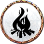
这个技能是焦炎 - 战斗的镜像版本，它摧毁该卡所在排对面排中最弱的单位（非英雄）。
它是应对集结的强力手段。
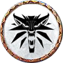
这个「猎魔人学派」技能实际上是 5 个相同的技能。
每个猎魔人学派（狼、毒蛇、猫、熊和狮鹫）都有对应的一种变体。
当场上出现同一学派的多个单位牌时，每个单位都因学派中的其他成员而获得 +2 加成（例如，有 3 张狼学派卡牌时，所有单位 +4）。
这个技能看起来很难利用，但它可以与另一个技能配合。
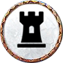
如果轮次结束时，你场上有一张带坚韧技能的卡牌，且它与场上另一张卡牌共享第二个技能，那么带坚韧的卡牌将留在场上进入下一轮。
目前，带坚韧技能的卡牌都是猎魔人学派要塞。如果对应学派的猎魔人也在此处，它们就会留在场上。
这张卡也会为同一学派的猎魔人提供加成。
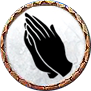
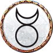
被朝拜单位根据场上朝拜者单位的数量获得加成。
这个技能需要组合两种卡牌才能产生强大效果。
医疗兵单位可以帮助把这种组合延续到后面的轮次。
但要注意，这会让大量被朝拜单位暴露在焦炎之下。
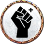
所有带激励技能的单位，其战力取己方场上激励单位中最高的基础战力。仍然受天气影响。
基本上，如果你场上有多个带激励技能的单位，它们会向其中基础战力最高者对齐（基础战力，即任何效果之前，无论正面还是负面）。
因此，晚打出一张更强的激励单位会提升场上所有其他单位，这可以给对手带来不愉快且意想不到的惊喜。
但要注意，由于所有激励单位的战力会变得相同（受效果影响前），它们很容易受到焦炎打击，可能被一次性全部摧毁。
给其中一些提供加成有助于缓解这一效果。
阵营
《巫师》宇宙非常庞大，为了给游戏带来更多变化和乐趣，我们把它分成了若干个阵营。
阵营通常代表一个王国或一群人/一个团体。每个阵营都有自己的一套卡牌和阵营技能，因此也有自己的打法。
阵营技能通常是被动的（在游戏的特定时刻触发），但有时也是主动的（由玩家自行决定何时使用），它会对游戏方式产生重大影响，因为你需要适应它才能发挥出最大优势。
在开始游戏之前，玩家必须选择要使用的阵营，这将决定可以用来构筑卡组的领袖和单位集合。
一些单位牌和特殊牌是
中立
的，这意味着它们可以在任何阵营中使用。
可用阵营
原版游戏
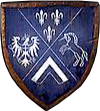
阵营技能：
每赢下一轮，便从牌组中抽一张牌。
这个阵营主要依靠紧密羁绊单位，配合间谍和攻城单位。
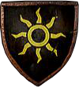
阵营技能：
如果一轮以平局结束，尼弗迦德赢得该轮。
这个阵营主要依靠紧密羁绊单位、间谍、医疗兵和强力卡牌。
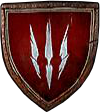
阵营技能：
每轮结束时，随机保留一张单位牌在场上。
这个阵营严重依赖集结技能，能迅速铺满战场。
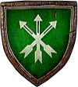
阵营技能：
游戏开始前，这个阵营决定谁先行动。
这个阵营主要依靠集结和医疗兵单位，以及一些士气鼓舞。
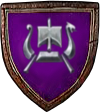
阵营技能：
第三轮开始时，从弃牌堆中随机复活两张单位牌。
这个阵营在紧密羁绊、集结和医疗兵之间保持平衡，但其特色是狂战士/曼陀罗组合。
自定义新阵营
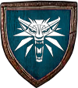
阵营技能：
每轮一次，玩家可以跳过一回合。
这个阵营拥有各种类型的卡牌，但其特色是猎魔人及他们对应的技能和法印。
阵营技能：
每输掉一轮，便从牌组中抽一张牌。
这个阵营在紧密羁绊、集结和焦炎单位之间保持平衡，并有许多强力卡牌。
阵营技能：
每局游戏一次，对所选排施加一次士气鼓舞效果。
这个阵营主要依靠集结和医疗兵牌，但也有诱饵单位和护盾特殊牌这两大特色。
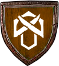
阵营技能：
开局时，英雄牌西吉·卢文已在场上。
这个阵营主要依靠间谍、集结和紧密羁绊单位，但也有银行特殊牌和一些猎巫单位这两大特色。
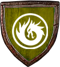
阵营技能：
每输掉一轮，便复活一个自己选择的单位。
这个阵营带来了一些新技能。一方面是巨龙教派拥有朝拜者与被朝拜单位的组合。
另一方面是自由战士拥有激励技能，让他们拥有场上其中最强者的战力。
准备
构筑你的卡组
要开始游戏，每位玩家必须选择一个阵营、一个领袖，并选择或准备一副所选阵营的卡组。
我们已经准备了一批我们认为玩起来有趣且相对平衡的卡组。
但你也可以构筑自己的卡组，规则如下：
- 至少 22 张单位牌 （含英雄）——来自所选阵营或中立卡牌。
- 最多 10 张特殊牌
小贴士：
- 卡组中牌越多，抽到最好卡牌和凑成组合的可能性就越小。明智地选择吧——这里少即是多。
- 英雄牌乍看之下可能很强大，但最终它们很无聊，也不是赢得比赛的关键，因为大多数英雄的影响都很有限。 因此，不要带太多英雄牌。
开始
通过掷硬币决定谁先手。每位玩家洗牌并抽 10 张。游戏开始前，每位玩家可以弃置最多 2 张牌并抽取替代牌（即「重抽」）。
剩下的 10 张牌将构成玩家的起手牌，很可能也是玩家整局游戏所拥有的全部卡牌。
回合
玩家轮流打出一张牌或使用其领袖/阵营的主动技能（如果有）。
玩家也可以选择跳过，不再参与本轮剩余部分（不再出牌），而另一位玩家则可以自由继续出牌。
当双方都跳过或都无法再出牌时，该轮结束。总分更低的玩家输掉一轮并失去一条生命值。
每位玩家初始有 2 条生命值，因此当输掉 2 轮时游戏结束。
注意：如果出现平局，双方都是最低分，双方都失去一条生命值。除非你使用尼弗迦德（平局时获胜），否则这不是理想的情况。
赢下该轮的玩家在下一轮先手。
计算总分可能会很烦人，好在电脑已经帮我们算好了。
但理解它是如何计算的仍然很重要，这样才能预判打出某些卡牌后分数的变化。
以下是计分的规则。
对于每一排：
- 天气效果总是最先结算，先于其他任何东西。它们会改变单位牌的基础战力。
- 一些罕见的阵营/领袖技能也会影响基础战力。天气的优先级高于它们，但如果当前没有天气效果，先结算这些技能。
- 从这里开始，可以认为战力的计算是从卡牌最特定的技能到更全局的效果。
- 首先应用紧密羁绊效果。
- 然后应用各种加成（士气、猎魔人学派、陶森特葡萄酒等），它们之间只是简单相加，顺序无关。
- 最后，永远是最后，应用排的倍数——即指挥官之角。